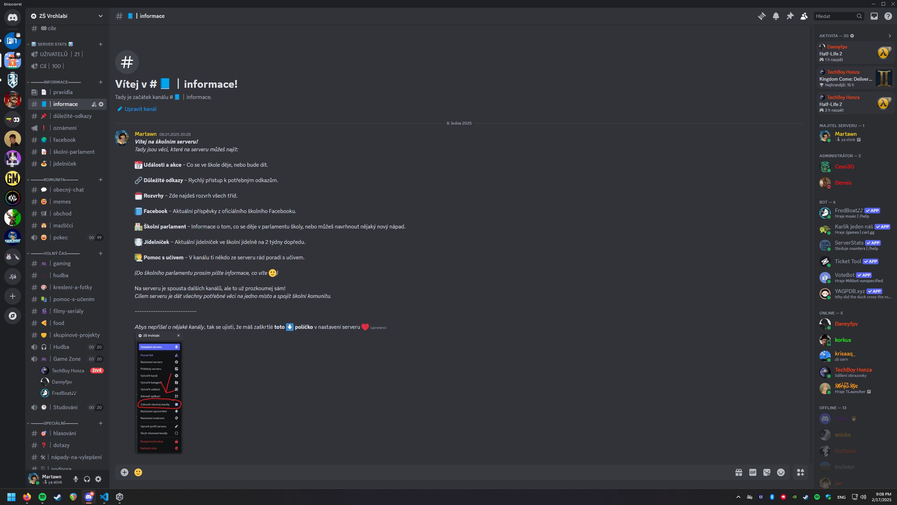

Mé Projekty

Moje vlastní stránka
Tuto stránku jsem původně vytvořil pro mé portfolio.
Není to nic zvláštního, jen krátká stránka o mně a pár mých projektech.
Ale myslím si, že je to docela dobré pro můj vlastní web

Flappy bird
Udělal jsem lehkou hru s podobným principem jako je "flappy bird".
Tuto hru jsem vytvořil zhruba v 11 letech se zájmem trochu se naučit C#.
Má to sice docela dost nedostatků ale porozuměl jsem základům >Unity a C#.

Školní Discord server
Jednou jsme si řekli s kámošem ze školy, že uděláme Discord server.
Chtěli jsme udělat něco originálního, co ještě žádná základka nemá.
Tak vzniknul tento server a věřím, že časem se rozroste a propojí víc školní komunitu.